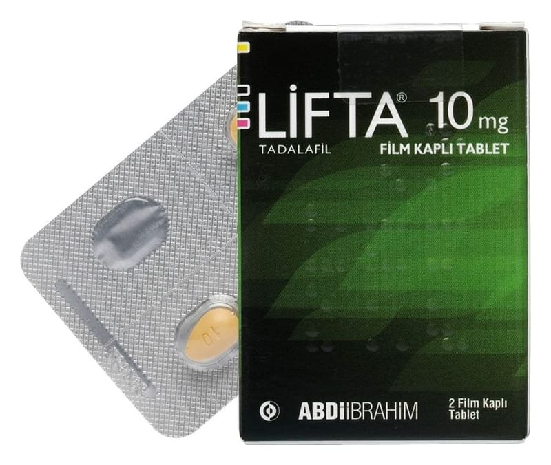

Lifta 10 mg Film Kaplı Tablet, 4 Adet

Ne için kullanılır
KT · Bölüm 1LİFTA 10 mg, sarı renkli, bir yüzünde “10” baskılı badem şeklinde film kaplı tablet 2, 4 ve 8 tabletlik blister ambalajda sunulmaktadır.
LİFTA, yetişkin erkeklerde erektil disfonksiyon tedavisi için kullanılan bir ilaçtır. Erektil disfonksiyon, cinsel aktivite için gerekli penis sertleşmesinin sağlanamaması veya sertliğin korunamaması durumudur. LİFTA’nn cinsel aktivite için uygun penis sertleşmesinin sağlanması yeteneğini önemli ölçüde geliştirdiği gösterilmiştir.
LİFTA, tadalafil etkin maddesini içeren, fosfodiesteraz tip 5 inhibitörleri olarak adlandırılan ilaç grubuna dahildir. Cinsel uyarıyı takiben LİFTA, penis içerisindeki kan damarlarının gevşemesine yardımcı olarak kanın penis içerisine akışını sağlar. Bunun sonucunda peniste sertleşme gerçekleşir. Eğer sertleşme sorununuz yoksa LİFTA yardımcı olmayacaktır.
Cinsel uyarının olmadığı durumlarda LİFTA’nın tek başına işe yaramayacağı önemle göz önünde bulundurulmalıdır. Bu nedenle sizin ve partnerinizin, sertleşme sorunu tedavisi için ilaç almıyormuş gibi, ön cinsel aktivitede bulunması gerekmektedir.